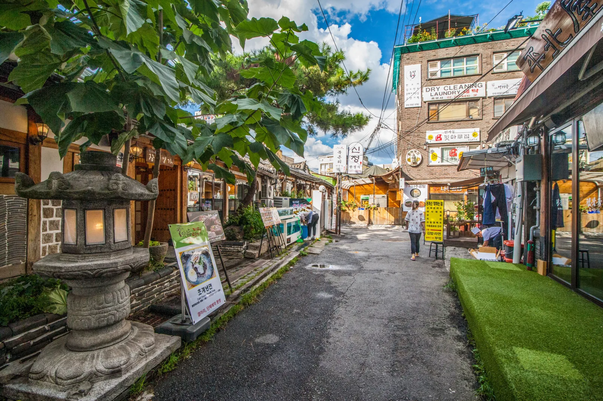
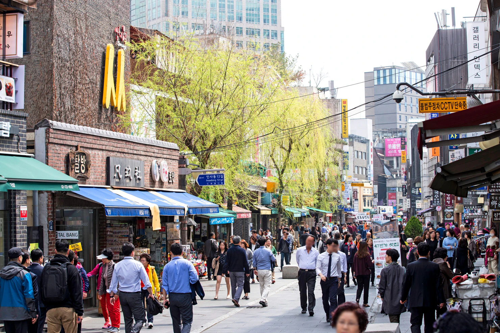
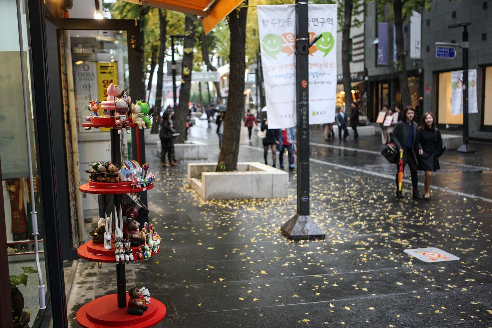
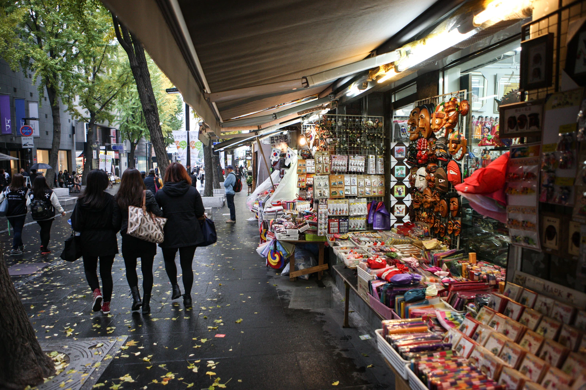
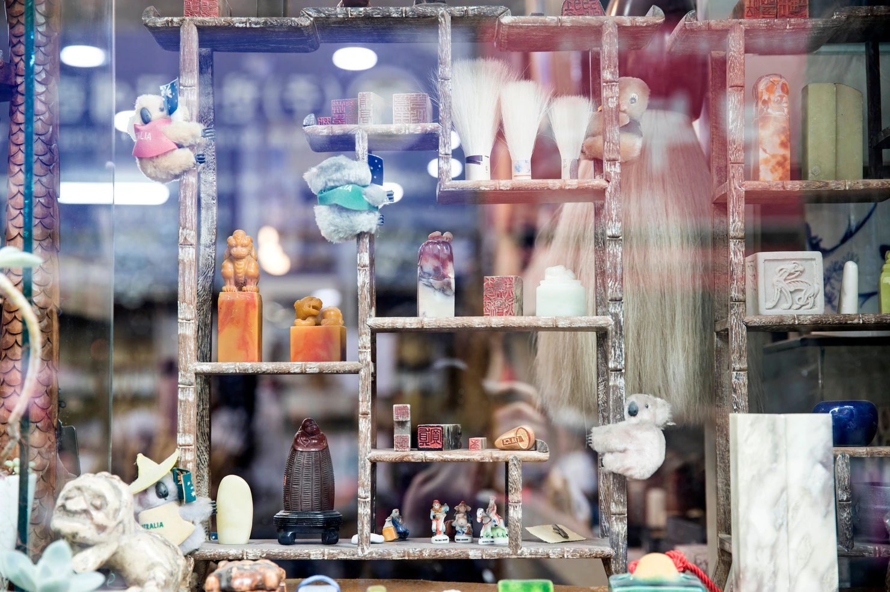
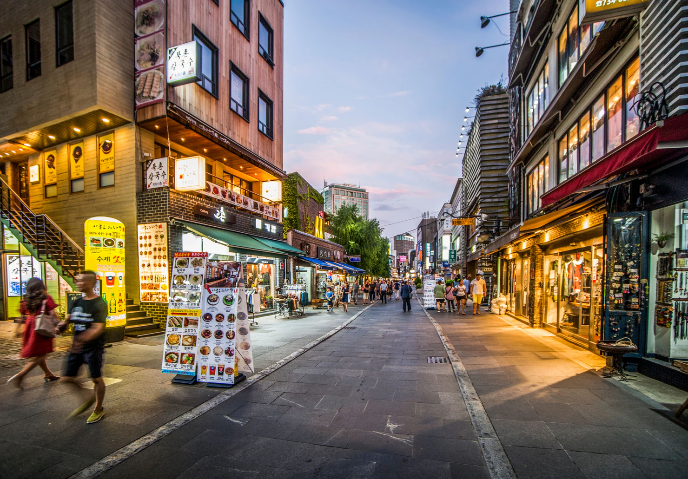

仁寺洞旅遊指南 2026
仁寺洞的行程，很容易走向兩種相反的安排失誤。

一種是沿著主街直走，看看幾家紀念品店，然後納悶這個街區為什麼有名。
另一種是收藏二十家工藝品店、五間茶館、Ssamzie-gil、曹溪寺，再加上幾個附近街區，把首爾原本適合放慢腳步的地方，變成另一張必去清單。
對多數旅客來說，仁寺洞本身不需要排滿一整天。
留幾小時逛韓國工藝品、好好吃一餐、喝一次傳統茶，再走走吸引你的街道就好。
第一次來首爾，把仁寺洞放進較完整的歷史街區路線，行程會更豐富：
景福宮 → 北村 → 仁寺洞 → 曹溪寺 → 一個晚間去處
最後可以選益善洞、清溪川，或單純在鍾路一帶吃晚餐。
重點不是把仁寺洞全部逛完。
而是放慢到足以察覺，為什麼首爾市中心的這一區，仍和一般購物區不太一樣。
仁寺洞真正適合做什麼
想在一天中段放慢步調時，仁寺洞最能發揮它的魅力。
你可能已經花了一個上午逛景福宮，或走過北村的坡道與韓屋街道。
來到仁寺洞時，不一定還需要另一個大型景點。
你需要的可能是吃飯、閒逛、坐下休息、買件值得帶回家的東西，再決定還想逛多少首爾市中心。
仁寺洞特別適合扮演這個角色。

來看韓國工藝，不只是一般紀念品
主街上有很多方便觀光客購物的店。
但這不是造訪的全部理由。
越過最前面的紀念品展示，你會開始看到陶瓷、紙製品、書法用品、小型工藝品、藝廊，以及商品本身與韓國設計、傳統材料更有連結的店鋪。
你不需要成為韓國工藝專家。
只要分清兩種不同的購買目的：
買一件價格不高、能讓你想起韓國的東西，
或因為物品本身吸引你，而決定帶回家。
兩者都很好。
但不是同一種購物體驗。
喝傳統茶，值得比匆匆買杯咖啡多留一點時間
在仁寺洞，坐下來也是造訪的一部分。
不該把傳統茶時間硬塞在兩家店之間的十五分鐘。
選一家就好。
點一款你真的想試的茶。
再好好坐一會兒，讓這段休息發揮作用。
已經走過宮殿與北村的旅客，休息 40 或 50 分鐘，可能比再跑一個景點，更能讓接下來的行程舒服。
如果對茶沒興趣，就略過。
不必只因身在仁寺洞，就勉強自己體驗傳統文化。
旁邊的小巷，比走完主街更重要
仁寺洞街提供了一條容易辨認的街區主線。
把它當作主線就好。
一些較值得停留的餐廳、茶館、藝廊與小店，其實在主要人潮之外。
有什麼吸引你轉彎時，就往旁邊的巷子看看。
不必只因指南說可能有隱藏小店，就每條巷子都走進去。
主街幫你掌握方向。
旁邊的小街，則讓你找到自己的逛法。
Ssamzie-gil 適合當行程參考點，不是半天的景點
第一次來，Ssamzie-gil 值得看看。
裡面的店鋪與螺旋式動線，讓你不用在街區裡反覆來回，就能逛到各種工藝與設計商品。
對許多旅客來說，繞一遍建築就夠了。
店鋪有興趣，就多留一點時間。
沒有興趣，就早點離開。
沒拍遍每一層，也不代表你沒看懂仁寺洞。
曹溪寺能讓行程再換一次步調
曹溪寺就在附近，不必為了加入它而重排整天。
更重要的是，它帶來和商店、茶館不同的感受。
這是一座仍有日常宗教活動的佛寺。
人們來這裡祈禱、參加法會，過著日常宗教生活。
如果佛教不是你的主要興趣，短暫造訪就可能足夠。
放低音量、看看四周，也記得眼前的人並不是觀光展示的一部分。
仁寺洞最適合白天逛
若想安排夜店、深夜購物或連續跑酒吧的首爾夜晚，我不會以這裡為主。
仁寺洞更值得安排在早一些的時段：
午餐、工藝品、茶、藝廊、寺廟與散步。
接近傍晚時，轉往另一個街區可能更合適。
想找咖啡廳、餐廳與較熱鬧的韓屋環境，可以去益善洞。
鍾路可以接著吃晚餐、喝點酒。
如果已經逛夠商店、還想繼續散步，可以去清溪川。
仁寺洞不必包辦整天的所有需求。
哪些人不一定需要留很多時間
如果對工藝、傳統茶、藝廊或歷史悠久的首爾市中心興趣不大，別只因仁寺洞常出現在初訪行程裡，就排上半天。
如果正好順路，可以花一兩小時走走。
再前往下一站。
更重視當代時尚、韓系美妝旗艦店或夜生活的旅客，通常在其他地方更能找到值得花時間的理由。
當你真的喜歡仁寺洞那些慢步調的部分，這裡才有價值。
這也是「去過一條名街」和「有理由留下來」的差別。
先看你實際有多少時間
不再把仁寺洞當成必須全部逛完的街區，行程就會好安排得多。
該留多久，取決於仁寺洞本身是不是目的地，或只是首爾歷史街區一日遊的一部分。
如果大約有兩小時
安排簡單一點。
實際可行的版本是：
仁寺洞街 → Ssamzie-gil → 傳統茶
或是：
仁寺洞街 → 午餐 → 曹溪寺
兩小時足以感受主街、逛一個集中的工藝空間，再做一件能體會仁寺洞與一般購物區不同之處的事。
但若要慢慢吃午餐、認真挑工藝品、逛幾間藝廊、喝傳統茶又看曹溪寺，兩小時就會很趕。
選真正重要的部分。
如果有四到五小時
如果仁寺洞是當天的主要行程之一，我會留這樣的時間。
你有足夠時間安排：
仁寺洞街 → Ssamzie-gil → 好好吃午餐 → 挑幾間工藝品店或藝廊 → 傳統茶 → 曹溪寺
重點是，你可以停下來。
可以坐著慢慢吃午餐，不必因為還有景點等著去而匆匆吃完。
可以花 40 分鐘喝茶。
可以因為真的有興趣而走進陶瓷店或藝廊，不必只是因為行程表說還剩七分鐘。
對許多旅客來說，這樣的仁寺洞行程就夠了。
如果有一整天可以觀光
別只是把仁寺洞的時間拉長。
用多出的時間，串起周邊歷史街區。
第一次來首爾，更豐富的一天可以是：
景福宮 → 北村 → 仁寺洞 → 曹溪寺 → 一個晚間去處
仁寺洞成為一天中段的行程，而不是整天的全部。
每個區域就有不同的作用。
宮殿帶你認識正式的歷史。
北村讓你走進仍有人居住的韓屋街道。
仁寺洞提供午餐、工藝、茶，以及較悠閒的購物休息。
曹溪寺再讓步調轉換一次。
晚間便可以前往別處。
如果已經逛過宮殿與北村
不必只為了把行程拉長，就再走一遍。
直接從仁寺洞開始。
留四五小時給這個街區，再往益善洞、清溪川或鍾路其他地方走。
第二次來首爾，不必重複第一次的必去清單。
時間更多，應該有更多選擇，而不是更多站
這是我會保留的原則。
多出一小時，就在喜歡的藝廊待久一點。
慢慢坐著喝茶。
想清楚後，買下真正喜歡的陶瓷作品。
午餐吃得從容一點。
別只因時間表還有空位，就自動加一個景點。
在仁寺洞這樣的首爾街區，留些沒排定的時間，通常反而逛得更好。
從哪裡開始：安國，還是南側？
仁寺洞沒有唯一正確的入口。
對許多第一次來的旅客，安國站是最容易安排的起點；但更適合的起點，還是要看當天其他行程在哪裡。
從宮殿方向過來，就從安國開始
如果從以下地方過來，安國很順路：
景福宮
北村
三清洞
其他 3 號線沿線地點
這裡也靠近仁寺洞北端。
從這裡，可以簡單地走：
安國 → 仁寺洞街 → Ssamzie-gil → 午餐／喝茶 → 曹溪寺 → 鍾路南側
這樣就有明確的行進方向。
持續往前走，不必到了仁寺洞中段，又為了已經經過的地方反覆折返。
當天已經在鍾路，就從南側進入
如果從鐘閣、鍾路、清溪川或仁寺洞以南的其他區域過來，不必只為了從安國站開始，就搭車越過街區。
從你已經所在的那一側進入就好。
接著沿仁寺洞往北逛；如果有利於下一段行程，就在安國附近結束。
這條街兩個方向都能逛。
方向應由行程決定，而不是由地鐵站名決定。
鍾路 3 街也可能合適
如果當天本來就要去益善洞，或 1、3、5 號線更符合動線，鍾路 3 街就很方便。
但要記得，多線交會的車站，站內步行距離可能比街道地圖上看起來更長。
離出口近，不一定代表從月台過去也快。
如果安國能讓抵達更簡單，就選安國。
如果鍾路 3 街能少轉一次車，也符合當天其他行程，就選鍾路 3 街。
想想你要在哪裡結束
這通常比只問該從哪裡開始，更有幫助。
如果晚上要去益善洞或鍾路，從安國附近開始往南走，通常很合理。
如果從清溪川過來，之後想去北村或三清洞，就反方向走。
仁寺洞範圍集中，兩個方向都可行。
真正浪費時間的，是行程沒有方向，反覆穿越同一段街區。
Korea Inside 的基本路線
第一次來時：
安國 → 仁寺洞街 → Ssamzie-gil → 午餐 → 工藝品／藝廊 → 傳統茶 → 曹溪寺
是最容易採用的基本安排。
不是因為安國是唯一正確的入口。
而是這樣能沿街區一路往前走，之後也保留了幾個不錯的去處。
仁寺洞街：以主街串起行程
仁寺洞街的作用，在於讓你容易掌握整個街區。
它不該成為造訪的全部。
沿主街朝一個方向走，進入小巷、店鋪與藝廊後，再回到這條主線。
這比因為收藏地點散在不同巷子裡，而反覆走同一段路更實用。
也看看兩旁
有些旅客花 20 分鐘從仁寺洞街一頭走到另一頭，沿路經過紀念品店，離開時卻不知道自己到底該看什麼。
更好的方式，是持續留意主街之外的地方。
小藝廊、陶瓷店、茶館或餐廳，可能比正前方的另一家店，更值得你轉進去看看。
但也不必因指南說有趣的地方藏在巷內，就每條巷子都進。
真的有吸引你的理由時，再轉彎。

不必每家店都進去
仁寺洞和明洞、聖水會帶來類似的問題，只是形式不同。
店鋪多到光是閒逛，就可能不知不覺用掉整個下午。
差別在於你逛的是什麼。
這裡不是化妝品或時裝，而可能是陶瓷、紙製品、書法用品、畫作、工藝品或禮物。
挑你有興趣的類別。
其他的走過就好。
店鋪看起來傳統，不代表一定與你的旅程有關。
逛藝廊，也可以只短暫停留
進小藝廊前，不必先懂韓國當代藝術。
展覽吸引你，就進去。
沒有興趣，就繼續走。
別把藝廊變成另一張必去清單，覺得每個空間都必須待一樣久。
有意思的五分鐘，也是一段值得的停留。
別為了吸引力不大的收藏地點折返
幾個月前存下的推薦，在手機上看似重要，現場卻可能很普通。
這沒關係。
如果已經走過，而它也不再吸引你，就繼續往前。
依眼前發現調整路線，會更適合逛仁寺洞。
主街提供的方向感，足以讓你保有彈性。
工藝品與紀念品：先想清楚要買什麼
仁寺洞是首爾市中心最容易買到紀念品的地方之一。
但不代表每件看起來傳統的物品，都值得放進行李箱。
逛街前，先決定這次購買的目的。
如果只想帶件能想起韓國的小物
簡單一點就好。
書籤、文具、小擺飾或其他輕巧禮物，可能比接下來整趟旅行都要小心保護的易碎品，更符合需求。
不是每次買紀念品，都需要挑能傳家的物件。
如果你要的就是便宜、方便，那就是合適的選擇。

如果對韓紙或文具有興趣
就留真正的時間給這一類。
韓紙、書法相關用品與韓國文具，能帶來一般紀念品貨架之外的選擇。
看看紙張、印刷、材料與設計，別看到第一件印有傳統圖樣的商品就買。
這類購物，小型專門店可能比大型綜合禮品店更有意思。
如果想買陶瓷或真正的工藝作品
付款前，慢慢考慮。
杯子、碗、陶瓷擺飾或手工藝品占行李空間，摔壞後也比較難補買。
問問自己，是否喜歡這件物品到願意帶著它走完韓國行程，再搭飛機回家。
也看看店家實際提供了哪些作品資訊。
別認為每件傳統設計的商品，都是手工、本地製造，或出自某位藝術家。
如果這些差別對你很重要，付款前先問清楚。
如果想要更有個人意義的東西
客製化物品，可能比另一件一般禮物更合適。
例如姓名印章、書法、手作物，或在工藝體驗中製作的作品。
但客製化需要時間。
如果這是你來仁寺洞的原因之一，就在行程裡正式留出時間。
如果不是，別讓臨時加入的工作坊，吃掉原本更在意的喝茶、午餐或街區散步。

價格，應該配合你購買的理由
別把簡單的觀光禮品與手工藝作品，當成同一類競爭商品來比。
它們滿足的是不同需求。
一種是價格不高的紀念。
另一種可能是因材料、技法、藝術家或設計而值得買。
先決定你要哪一種。
再在同一類裡比較。
結帳前，先想想行李箱
買陶瓷、裝框藝術品或較大的擺飾時，尤其重要。
物品還得平安度過剩下的旅程。
如果會換好幾次飯店，或搭機行李額度有限，即使更喜歡大件的，小件作品也可能更適合。
付款前，先問有沒有防護包裝。
一件漂亮物品，如果讓你接下來五天一直擔心摔壞，就不算好的旅遊購物選擇。
Korea Inside 的原則
想要便宜紀念品，就買便宜紀念品。
物品本身值得，再多花一些。
如果沒有任何東西讓你想帶回家，也可以什麼都不買。
手上沒有購物袋，仁寺洞仍然值得來。
Ssamzie-gil：值得看，但不必圍著它排一整天
第一次逛仁寺洞，Ssamzie-gil 是很好用的地標之一。
螺旋步道讓你從街道層慢慢走到屋頂，沿途有小店、藝廊與工藝空間。
這就是它方便的地方。
不必在街區裡來回走，就能看到多種韓國工藝與設計商品。
但不代表你需要在這裡待大半個下午。
對許多旅客，約 30 到 40 分鐘就夠
從下到上逛一遍。
看看真正有興趣的店鋪。
如果遇到想仔細看的陶瓷、文具、飾品、藝術品或其他工藝，就多留一些時間。
如果沒有特別吸引你的，到頂樓看看，再繼續逛街區就好。
Ssamzie-gil 應該幫你認識仁寺洞。
不該變成每家店都得檢查一遍的義務。
建築本身也是造訪理由之一
Ssamzie-gil 的連續步道，像仁寺洞另一條巷子般，繞著中央庭院一路向上。
這比把它當成一般室內購物中心更有意思。
店鋪固然重要，建築如何讓逛街變成一段連續散步，也值得留意。
感受一次就好。
再決定商品是否值得花更多時間。
集中，不代表獨有
Ssamzie-gil 的一項優點是方便。
許多小店集中在同一個地方。
但不代表仁寺洞所有值得買的東西，都在這棟建築裡。
看到喜歡的，可以買。
如果還不確定，就先繼續逛街區，再決定。
要帶回家的物品，多花 30 分鐘比較，往往比看到第一件就買更有幫助。
如果不是你喜歡的購物類型，就快速逛過
對工藝、設計商品或紀念品沒興趣的旅客，不必勉強自己對 Ssamzie-gil 表現熱情。
走一遍就好。
再把時間留給午餐、喝茶、曹溪寺，或首爾市中心其他地方。
有名的地點，也可以只短暫停留。
傳統茶：選一家，好好坐下來
仁寺洞行程裡，喝傳統茶是少數應該放慢、而不是追求效率的部分。
別把它當成另一家要逛的店。
重點不是點餐、拍杯子，十分鐘後就走。
選一間茶館，留時間好好坐下。
四十到六十分鐘很合理
停下來喝茶時，你可能已經花了幾小時走宮殿、北村或仁寺洞。
這會改變這一站的價值。
你不只是在試一款韓國飲品。
也是讓雙腳休息、離開往來人潮，讓後半天的行程更舒服。
對許多旅客，這比再塞一間藝廊或紀念品店更值得。
進門前，不必先懂韓國茶
傳統茶的菜單可能不太熟悉。
這沒關係。
有英文說明時可以參考；不確定的話，也可以問店家招牌是什麼。
有些旅客喜歡以茶葉沖泡的茶。
有些人則偏好水果、穀物或草本類傳統飲品。
不必選菜單上看起來最有文化深度的一項。
選你真的想喝的就好。
茶館與飲品，吸引人的地方不一樣
室內空間本身，可能就是魅力的一部分。
仁寺洞仍有以氛圍、奉茶與慢步調為體驗核心的傳統茶館。
但不代表只有某家知名茶館才是正確選擇。
挑氛圍和菜單符合你想要的休息方式的地方。
別把茶館變成連續打卡行程
基本路線裡，一家就夠。
第二間茶館帶來的收穫，通常不如第一間多。
如果傳統茶是你的主要興趣，就不必理會這個原則，可以深入探索。
對其他人來說：
一間茶館 → 好好坐下休息 → 繼續行程
是更適合仁寺洞的安排。
喝茶與午餐，不該搶同一個角色
肚子餓了，就先吃飯。
傳統茶加上一份小甜點，不一定就能當午餐。
同樣地，剛吃完一頓豐盛韓式料理，也不必因行程表上下一站是茶館，就立刻進去。
先走一會兒。
真正想休息時，再喝茶。
時間安排除了配合地圖，也應配合身體狀況。
Korea Inside 的基本路線
第一次來時：
先逛工藝品與散步 → 午餐 → 再逛一下 → 一間傳統茶館
這樣的節奏，比以下安排更好：
店鋪 → 咖啡廳 → 店鋪 → 咖啡廳 → 店鋪。
讓仁寺洞安靜的部分保持安靜，這個街區才能發揮它的好處。
在仁寺洞好好吃一餐
仁寺洞的一天，很容易變成：
點心 → 茶 → 甜點 → 再吃一份點心
然後到了下午 4 點，大家才發現根本沒吃午餐。
除非原本就打算一路吃小點，否則別讓這種情況發生。
如果從景福宮或北村過來，仁寺洞很適合停下腳步一小時，好好吃一餐。
讓午餐專心做好一件事
午餐應該填飽肚子。
傳統茶則可以留待稍後，作為慢下來感受文化的休息。
不必只因地圖上兩者很近，就硬湊成一個匆忙的停留。
坐下來。
好好吃飯。
再回到街上。
這一小時通常比堅持再逛一家收藏店鋪，更能讓下午走得盡興。
想簡單吃一餐，可以選餃子或湯品
不必每次在仁寺洞吃飯，都點一大套韓式套餐。
接下來還要走好幾小時時，一碗湯、韓式麵疙瘩或餃子，可能更合適。
提到這一類，不是要每位旅客都去某家名店。
而是說明，仁寺洞午餐可以簡單、熱呼呼，又有韓國特色，不必變成漫長正式的用餐體驗。
如果隊伍長得不合理，就換一家。
除非餐廳本身就是重點之一，否則午餐不該讓你站著等上一小時。
韓式定食，是另一種選擇
如果想讓午餐本身成為文化體驗，韓定食就值得留更多時間。
以下情況更適合：
與父母或一群人同行
大家都想坐下來休息一陣子
用餐本身就是你想體驗的內容之一
吃完後不急著趕另一個有固定時間的景點
如果在仁寺洞只有兩小時，就比較不適合。
較長的用餐時間，應取代其他安排。
不該只是額外加在原有行程上。
素食旅客在這裡，可能有比預期更好的選擇
寺院料理讓仁寺洞與曹溪寺一帶，擁有與一般觀光區確實不同的飲食選項。
它和快速吃一碗麵，不是同一回事。
如果對寺院料理本身有興趣，就留足夠用餐時間，並在出發前確認目前營業時間與預約條件。
如果只是需要午餐，也不必把它變成文化課程。
為某家餐廳走過整個仁寺洞前，先看午休時段
在韓國，這點很重要。
餐廳可能供應午餐與晚餐，但中間會休息幾小時。
所以，如果特別想去某家餐廳：
先確認今天的營業時間。
別只因舊地圖資料寫著「營業至 9 點」，就於下午 3:30 橫越街區走過去。
Korea Inside 的基本路線
如果從宮殿或北村過來：
先散步 → 好好吃午餐 → 工藝品與購物 → 稍後喝傳統茶
會是更好的節奏。
茶是休息。
午餐是正餐。
讓兩者各自發揮作用。
曹溪寺：因為順路而加入行程
曹溪寺不必成為另一個大型觀光計畫。
這也是它很適合串進仁寺洞的原因。
離開商店與茶館，走一小段路，就能在鍾路市中心進入一座仍有宗教活動的佛寺。
氛圍的轉換，就是值得加入的理由。
對許多旅客，約 20 到 30 分鐘就夠
走走寺院。
看看主要殿堂建築。
放慢幾分鐘。
再繼續當天行程。
如果真的對佛教、寺廟建築或法會有興趣，就待久一點。
如果沒有，短暫造訪就足夠。
別只因知名地點似乎應該配得上一定時間，就勉強拉長停留。
記得，這裡有人正在禮佛
曹溪寺不是戶外博物館。
人們可能正在祈禱、參加法會，或為宗教目的進入大殿。
放低音量。
不要為了拍照，擋住出入口或信眾。
如果法會改變了部分區域的開放方式，請尊重這個空間的宗教用途優先。
大門開著，不代表寺內每一處在任何時間，都以同樣方式開放觀光客參觀。
造訪前，不必先懂佛教
不必把 30 分鐘的停留，變成一堂韓國佛教課。
留意正在發生的事。
看看建築，以及正在使用寺院的人。
有什麼讓你好奇，再多了解。
如果沒有，寺廟與剛離開的商業街道之間的對比，本身就已是體驗的一部分。
曹溪寺也適合用來決定下一步
逛完寺廟後，想想今天還想做什麼。
想找咖啡廳、餐廳與更熱鬧的韓屋環境，就往益善洞。
已經逛夠商業區，就往清溪川走。
累了，就結束。
曹溪寺很適合做這個決定，因為你的步調已經慢下來。
別只因逛了一座寺廟，就再加另一座
第一次安排首爾行程時，尤其要留意。
上午逛宮殿，再加北村、仁寺洞與曹溪寺，已經是一段完整的文化行程。
不必只因歷史或宗教地點就在附近，就一直往上加。
用心看一座寺廟，比因地圖上又有標記就連進三座更好。
Korea Inside 的基本路線
對多數第一次來的旅客：
仁寺洞購物與喝茶 → 曹溪寺約 30 分鐘 → 決定晚間去處
就夠了。
曹溪寺值得安排，是因為它能改變當天的氛圍，又不需大幅繞路。
選下一個街區
仁寺洞靠近首爾市中心幾個知名區域。
這很方便。
但也容易讓原本合理的一天，變得太滿。
景福宮、北村、益善洞、清溪川與鍾路，看起來都近到可以加進去。
你不需要全去。
依你希望接下來的一天怎麼過，選下一個街區。
景福宮與北村，通常適合排在仁寺洞之前
如果還沒看過宮殿一帶，就安排在較早的時段。
第一次來，可以簡單地依序走：
景福宮 → 北村 → 仁寺洞
這個順序從上午較正式的觀光開始，慢慢轉為自由一些的行程。
來到仁寺洞時，午餐、工藝品與茶，就能讓步調放慢。
逛街、喝茶幾小時後，再想去景福宮，通常會把這個節奏倒過來。
如果宮殿很重要，就把精神較好的上午留給它。
想接著享受晚間外出，就選益善洞
如果還不想結束，益善洞是自然的下一站。
視野裡仍有韓屋，但造訪目的改變了。
接下來是咖啡廳、餐廳、小店，以及晚間聚會的氛圍。
如果大半天已經圍繞歷史與文化，這會比再去一座博物館更適合銜接。
別把益善洞當成仁寺洞的延伸版。
因為想讓下一段行程有不同感受，再去。
逛夠商店，就選清溪川
有時候，正確的下一站不是另一個充滿購物選擇的街區。
如果已經吃過午餐、看工藝品、喝茶又逛了幾家店，沿清溪川散步可能更好。
你可以繼續走，不必再進店，也不必判斷另一間咖啡廳值不值得排隊。
天氣舒服、還想散步，但已經沒有心思購物時，這尤其合適。
更想吃晚餐、喝點酒，就往鍾路
如果同行的人想從下午接到晚餐、喝酒或更有都市感的夜晚，就往鍾路，不必硬加另一個文化景點。
如果能讓接下來的地鐵動線更順，鍾路 3 街也很合適。
這裡的決定，不是為了再收集一個有名字的街區。
而是改變當天接下來的目的。
歷史與工藝行程可以結束。
晚餐可以開始。

別只因地圖上看似方便，就把所有地方串在一起
首爾市中心夠集中，也因此容易排出不合理的行程。
五個地方彼此都可能「只要走 15 分鐘」。
但不代表整天只有一小時用在移動。
每次轉往下一站，還包含：
找對街道、
等紅綠燈、
看店鋪、
拍照、
走累了、
找洗手間，
以及決定吃什麼。
距離近，不代表不花時間與體力。
Korea Inside 的基本路線
第一次來首爾：
景福宮 → 北村 → 仁寺洞 → 曹溪寺 → 益善洞
就已經是一整天。
逛完仁寺洞覺得累了，就拿掉益善洞。
想安靜一點收尾，就改選清溪川。
如果晚餐與喝酒更重要，就往鍾路。
有一個舒服的結尾，就夠了。
實際走起來順的路線
仁寺洞不需要複雜的行程。
重點是，它是當天的主角，還是首爾歷史街區完整路線中，步調較慢的中段。
對多數旅客，兩種版本就足夠。
第一次來首爾，還要去景福宮與北村時，選第一種。
想多花時間逛仁寺洞本身，就選第二種。
別把兩種合在一起。
更多路線選項，不會讓當天更好安排。
路線 1 — 初訪首爾歷史街區
建議時間安排 — 含用餐與休息約 9 小時
-
上午 9:00–10:40 — 景福宮
趁雙腳與精神都還充足，先逛宮殿。
在這條路線裡，不必把景福宮變成三小時的博物館行程。約 90 到 100 分鐘，足以看主要動線，也能留時間給後面的街區。
聚焦宮殿主要空間，不必走遍每個角落。
如果景福宮本身就是你來首爾的主要原因之一，則應另排一次深入參觀。
-
上午 10:40–11:00 — 往北村移動
繼續往宮殿東側與三清洞／北村方向走，不必只因從地鐵站抵達，就回頭搭車。
這段步行，也是從正式宮殿空間，轉入仍有日常生活的歷史街區的過程。
-
上午 11:00–下午 12:10 — 北村韓屋村
北村行程保持精簡。
這裡仍是住宅區，不是戶外博物館。請走公共步行路線、放低音量，別把敞開的門或私人住宅當成拍照布景。
對多數第一次來的旅客，約一小時就夠。
重點是看看韓屋街道、認識街區，不是找遍每個知名拍照角度。
-
下午 12:10–12:25 — 往仁寺洞走下去
不必搭地鐵。
北村與仁寺洞夠近，走路更簡單，也讓當天行程保持連貫。
往安國與仁寺洞走時，旅程又轉換了：從居住中的韓屋街道，進入藝廊、工藝品店、茶館，以及商業氣息更濃的文化街區。
-
下午 12:25–1:25 — 在仁寺洞或附近吃午餐
這時適合安排第一次較長的坐下休息。
上午已經走過宮殿與北村。
開始仁寺洞購物與茶館行程前，先好好吃一餐。
別為了保住每一家收藏店鋪，而犧牲午餐。
-
下午 1:25–2:25 — 仁寺洞街＋Ssamzie-gil
以仁寺洞街作為主線，但別只待在主街。
藝廊、文具店、陶瓷店或工藝空間真的吸引你時，就轉進旁邊的巷子。
Ssamzie-gil 把傳統與當代工藝集中在一個適合步行的空間，值得逛一遍。
不必每層樓都買東西。
先藉此了解自己喜歡哪一類韓國工藝或紀念品，再到別處花錢。
-
下午 2:25–3:10 — 喝一次傳統茶
這一段，應該讓仁寺洞和首爾其他購物街區有所不同。
選一間傳統茶館，坐下來。
別把茶館也變成另一張必須完成的清單。
價值就在這段暫停：喝茶，想吃就點甜點，走了幾小時後，讓雙腳休息 40 到 45 分鐘。
-
下午 3:10–3:25 — 步行前往曹溪寺
曹溪寺就在附近，加入行程也不會帶來另一個交通問題。
把這段路當成在鍾路市中心散步的一部分，不必視為另一趟單獨的景點移動。
-
下午 3:25–3:55 — 曹溪寺
留大約 30 分鐘給寺廟。
曹溪寺仍有日常佛教活動，不是歷史布景。
看看大殿與寺院空間，但記得人們來這裡是為了祈禱及參與宗教活動。
除非你對佛教、建築或當期寺院活動有興趣，否則不需要長時間參觀。
-
下午 3:55–4:10 — 往益善洞走
一小段路，就能進入另一種很不一樣的韓屋街區。
別期待益善洞和北村有相同感受。
韓屋仍在，但建築用途轉向咖啡廳、餐廳、選物店與晚間聚會空間。
-
下午 4:10 之後 — 在益善洞度過傍晚與夜間
別帶著十二間咖啡廳的清單來。
先走走狹窄街道。
有咖啡廳或店鋪吸引你，就停下來；沒有的話，就繼續走，把益善洞留給早一點的晚餐或晚間氛圍。
到了這裡，行程應該放鬆下來。
你已經逛過宮殿、北村與仁寺洞。
不必一直收集景點，直到每個人都累了。
路線 2 — 以仁寺洞為主的半日行程
建議時間安排 — 約 5 小時
-
上午 10:30 — 從安國站 6 號出口開始
從仁寺洞北端出發。
這讓散步有明確方向，不會從街區中間開始，之後又繞回去。
Ssamzie-gil 從這一側過去只需幾分鐘，但別讓它成為第一站，也是唯一一站。
先逛街道。
-
上午 10:35–11:30 — 仁寺洞街與兩旁小巷
走主街，也持續看看兩旁。
以主街為主線，遇到真正有興趣的藝廊、陶瓷店、文具店或工藝空間時，再走進小巷，最能感受仁寺洞。
別把每家紀念品店都當成必逛。
重點是找到自己真正喜歡的傳統商品或工藝類型。
-
上午 11:30–下午 12:10 — Ssamzie-gil
留約 40 分鐘給 Ssamzie-gil。
從下到上逛一遍。
有興趣時，就停下來。
不必每一層都買東西。
-
下午 12:10–1:10 — 吃午餐
這時適合坐下來。
午餐應該填飽肚子。
茶留到後面。
選一頓符合食量的韓式料理，不必為街上看到的每一樣小吃都留肚子。
-
下午 1:10–2:00 — 工藝品、藝廊或一項特定購物興趣
這時回到仁寺洞最吸引你的部分。
可能是：
陶瓷
書法或文具
傳統工藝
藝廊
韓國紀念品
選一兩項興趣。
別再花一小時把每家店都走進去。
-
下午 2:00–2:45 — 一間傳統茶館
這也是仁寺洞值得專門留時間的原因之一。
坐下來。
喝一款傳統茶，想吃的話再點甜點。
別只為了在行程表上多放一個景點，就匆匆結束這一段。
對許多旅客來說，喝茶這一站正是仁寺洞與一般購物街的差別。
-
下午 2:45–3:00 — 步行前往曹溪寺
曹溪寺距離夠近，不需要另外安排搭車。
走過去就好。
-
下午 3:00–3:30 — 曹溪寺
留約 30 分鐘給曹溪寺。
看看大殿與庭院。
保持安靜，別把信眾當成觀光景觀的一部分。
除非佛教或寺廟建築是你的主要興趣之一，否則不用長時間參觀。
-
下午 3:30 之後 — 選一個延伸行程
別只因都在附近，就兩個都加。
益善洞 — 適合想找咖啡廳、餐廳與較當代的韓屋氛圍時。
清溪川 — 適合寧可散步，也不想再進另一個商業區時。
選一個符合當天後續安排的結尾。
仁寺洞適合誰，又有哪些人不必留太久
仁寺洞很有名，第一次來的旅客常常直接排進去，卻沒先想這個街區是否符合自己的旅遊方式。
不必如此。
有些旅客在這裡待四五小時，也不覺得時間過了多久。
有些人九十分鐘就能看夠想看的部分。
兩者都很正常。
第一次來首爾的旅客
放進完整的首爾歷史街區一日行程時，仁寺洞是很好的安排。
這個街區提供了宮殿與北村沒有的部分：
不必離開首爾市中心，就能吃飯、逛工藝品、坐著喝茶、放慢腳步。
你大概不需要把一整天都留給仁寺洞本身。
把它安排成當天從正式觀光轉向悠閒的時段。
對韓國工藝與設計有興趣的旅客
多留一些時間給仁寺洞。
陶瓷、紙製品、書法、藝廊、小型工藝品與設計店，足以讓你有理由逛到主街之外。
先想好一兩個類別再來。
這會比在每一家店評估每件看起來傳統的物品，更容易做出好選擇。
想找有意義紀念品的旅客
如果你想仔細挑一件東西，而不只是最後一刻在機場買禮物，仁寺洞尤其方便。
但不代表這裡賣的每件商品，自動就是手工製作或具有文化意義。
如果在意產地、材料或製作技法，就多看看、比較，也問清楚。
你可能只帶走一件物品，而不是十件紀念品。
這仍然可能是更好的購物結果。
喜歡茶、藝廊與悠閒下午的旅客
留四五小時。
對你而言，這個街區的慢節奏就是優點。
可以不趕時間地吃飯，因為覺得有趣而走進藝廊，也能在茶館裡坐著，不用每十分鐘看一次時間。
對這類旅客，效率不是主要目標。
與父母或不同世代親友同行
仁寺洞可能很適合，因為整天不必依賴某個耗體力的景點。
沿途有不少機會坐下、吃飯與更改計畫。
但別因此以為整條首爾歷史路線都輕鬆。
到仁寺洞之前，景福宮與北村就可能已經需要走不少路。
如果有人開始累了，就縮短購物，或略過晚間延伸行程。
隨時能停下來，是仁寺洞的優點之一。
好好利用這點。
帶孩子的家庭
要看孩子的喜好。
如果孩子喜歡逛小店、動手做東西，Ssamzie-gil、小店與手作工藝體驗可能很合適。
但連續幾小時看陶瓷、逛藝廊、喝傳統茶，就未必適合。
別排一套大人的文化行程，就以為地方都很近，孩子也會喜歡。
保留一兩個他們真正感興趣的地點，其餘維持彈性。
再次造訪首爾的旅客
仁寺洞可以逛得更有選擇。
你可能不再需要標準的主街散步。
為某間藝廊、工藝品店、茶館、一餐或一場見面而來。
剩下的時間，再逛周邊鍾路。
再次造訪時，目的更聚焦，往往逛得更好。
以當代時尚與韓系美妝為主的旅客
縮短仁寺洞時間。
如果主要興趣是當季韓國時尚、美妝旗艦店、快閃店與當代零售空間，應把更多時間留給首爾其他街區。
你仍可能喜歡把仁寺洞當成歷史行程中的午餐與喝茶一站。
但不一定需要占去四小時購物時間。
尋找夜生活的旅客
在夜間成為行程主軸之前，前往別處。
仁寺洞更適合白天與傍晚。
想去酒吧、感受深夜活力，或安排較長的大人夜間行程，可以在仁寺洞完成文化部分後，再轉往其他地方。
不必要求這個街區變成它原本不是的樣子。
只在首爾待兩三天的旅客
把仁寺洞和其他行程一起比較優先順序。
如果重視宮殿、傳統街區與韓國工藝，就保留它。
如果重點在其他地方，穿越首爾市中心時留一兩小時，也可能足夠。
短途旅行裡，有名的街區不代表自動值得半天。
Korea Inside 的基本路線
如果你在意以下內容，就多留時間給仁寺洞：
工藝品、
茶、
藝廊、
歷史悠久的首爾市中心，
或仔細挑一件韓國紀念品。
如果只是稍有興趣，就少留一些時間。
仁寺洞該逛多久，不由街區有多有名決定。
而是取決於它的造訪理由裡，有多少真正也是你的理由。
Korea Inside 的仁寺洞基本安排
第一次來首爾，而且歷史悠久的市中心是重點之一時，可以走：
景福宮 → 北村 → 仁寺洞 → 曹溪寺 → 一個晚間去處
這樣就足夠排滿一整天。
別只因地圖上看起來近，就再加另一座宮殿、另一個韓屋街區和另一座市場。
如果已經逛過宮殿與北村
留約四到五小時給仁寺洞。
從安國附近開始。
走仁寺洞街與旁邊的小街。
看看 Ssamzie-gil。
好好吃午餐。
挑一兩項工藝或藝廊興趣。
坐下來喝傳統茶。
再去曹溪寺。
之後再決定，當天是否繼續。
如果只想買紀念品
你可能不需要那麼多時間。
兩小時可能就夠：
仁寺洞街 → Ssamzie-gil → 有目標地購物
想體會街區較慢的步調，再加喝茶。
真正目的只是買禮物時，不必排出半天的文化行程。
如果為了工藝與茶而來
那就反過來。
放慢腳步。
在有興趣的店鋪或藝廊待久一點。
從容吃午餐。
在一間茶館裡好好坐著。
對這類旅客，仁寺洞四五小時並不過多。
因為時間花在了讓你選擇這個街區的事物上。
如果逛完景福宮與北村已經累了
縮短仁寺洞行程。
吃點東西。
走一段主街。
在喝茶與曹溪寺之間選一個。
然後結束。
合適的行程，不是把每個知名地點都塞進去。
而是你還有足夠精神享受的那一份。
基本選擇
對多數第一次來的旅客：
先逛宮殿與北村 → 在仁寺洞吃午餐、看工藝品、喝茶 → 曹溪寺 → 選一個晚間方向
是最能善用這一帶的安排。
仁寺洞不必占據整天。
它的好處，就是為忙碌的首爾歷史行程，提供一個放慢步調的地方。
當它已經做到這件事，就可以繼續往前。